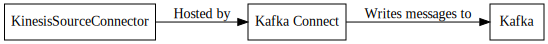

KinesisSourceConnector¶
The KinesisSourceConnector is a :term:`Source Connector`_ that is used to pull data from Amazon Kinesis in realtime and persist the data to a Kafka topic.
Configuration¶
kinesis.shard.id¶
Importance: High
Type: String
Default Value: .*
The shard of the Kinesis stream to read from. This is a regex which can be used to read all of the shards in the stream.
kinesis.empty.records.backoff.ms¶
Importance: Medium
Type: Long
Default Value: 5000
Validator: [500,…,2147483647]
The number of milliseconds to backoff when the stream is empty.
kinesis.position¶
Importance: Medium
Type: String
Default Value: TRIM_HORIZON
Validator: ValidEnum{enum=ShardIteratorType, allowed=[AT_SEQUENCE_NUMBER, AFTER_SEQUENCE_NUMBER, TRIM_HORIZON, LATEST, AT_TIMESTAMP]}
The position in the stream to reset to if no offsets are stored.
kinesis.record.limit¶
Importance: Medium
Type: Int
Default Value: 500
Validator: [1,…,10000]
The number of records to read in each poll of the Kinesis shard.
kinesis.region¶
Importance: Medium
Type: String
Default Value: US_EAST_1
Validator: ValidEnum{enum=Regions, allowed=[GovCloud, US_EAST_1, US_EAST_2, US_WEST_1, US_WEST_2, EU_WEST_1, EU_WEST_2, EU_CENTRAL_1, AP_SOUTH_1, AP_SOUTHEAST_1, AP_SOUTHEAST_2, AP_NORTHEAST_1, AP_NORTHEAST_2, SA_EAST_1, CN_NORTH_1, CA_CENTRAL_1]}
The AWS region for the Kinesis stream.
kinesis.throughput.exceeded.backoff.ms¶
Importance: Medium
Type: Long
Default Value: 10000
Validator: [500,…,2147483647]
The number of milliseconds to backoff when a throughput exceeded exception is thrown.
Examples¶
Property based example¶
This configuration is used typically along with standalone mode.
name=KinesisSourceConnector1
connector.class=com.github.jcustenborder.kafka.connect.kinesis.KinesisSourceConnector
tasks.max=1
aws.access.key.id=< Required Configuration >
aws.secret.key.id=< Required Configuration >
kafka.topic=< Required Configuration >
kinesis.stream=< Required Configuration >
Rest based example¶
This configuration is used typically along with distributed mode. Write the following json to connector.json, configure all of the required values, and use the command below to post the configuration to one the distributed connect worker(s). Check here for more information about the Kafka Connect REST Interface.
{
"config" : {
"name" : "KinesisSourceConnector1",
"connector.class" : "com.github.jcustenborder.kafka.connect.kinesis.KinesisSourceConnector",
"tasks.max" : "1",
"aws.access.key.id" : "< Required Configuration >",
"aws.secret.key.id" : "< Required Configuration >",
"kafka.topic" : "< Required Configuration >",
"kinesis.stream" : "< Required Configuration >"
}
}
Use curl to post the configuration to one of the Kafka Connect Workers. Change http://localhost:8083/ the the endpoint of one of your Kafka Connect worker(s).
curl -s -X POST -H 'Content-Type: application/json' --data @connector.json http://localhost:8083/connectors
curl -s -X PUT -H 'Content-Type: application/json' --data @connector.json http://localhost:8083/connectors/KinesisSourceConnector1/config